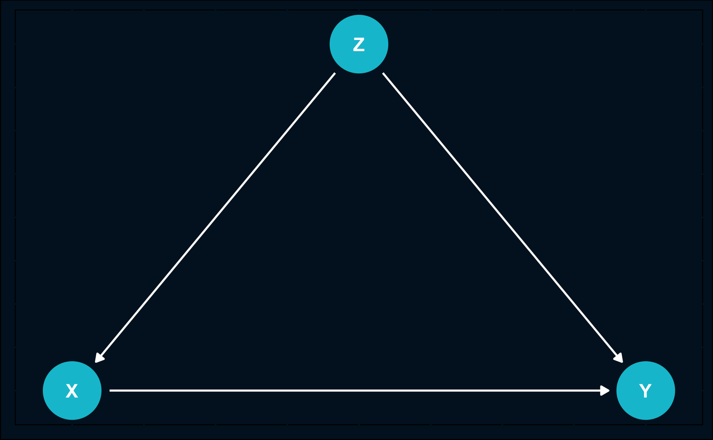
Directed Acyclic Graphs
Introduction
We have already learned that correlation and causation can easily be confused. Now, we will define concepts and acquire tools that help us in developing credible identification strategies to separate correlation from causation. One essential part is graphically modeling your theoretical knowledge about the data-generating process.
In causal inference, directed acylic graphs (DAGs) do the graphic modeling part. They are the foundation of any analysis strategy and moreover communicate your research plan.
DAGs show what variables are important for your analysis and how you think they are related. Information to draw a DAG can come things like:
Domain knowledge
State-of-the art theory
Plausible assumptions and hypotheses
Observations and experiences
Conversations with experts
A DAG should map what you know about the phenomena you are studying into a visual representation. By deciding how to draw your graph you have to ask yourself:
Between what variables do you think is a causal relationship?
Between what variables there is no causal relationship?
Besides being helpful in guiding your analysis and identification strategy, DAGs also show your research design to your audience.
A simple example of a DAG could be the effect of having an university degree on future salary: at first, it might be intuitive to say that future salary increases when you get an university degree.
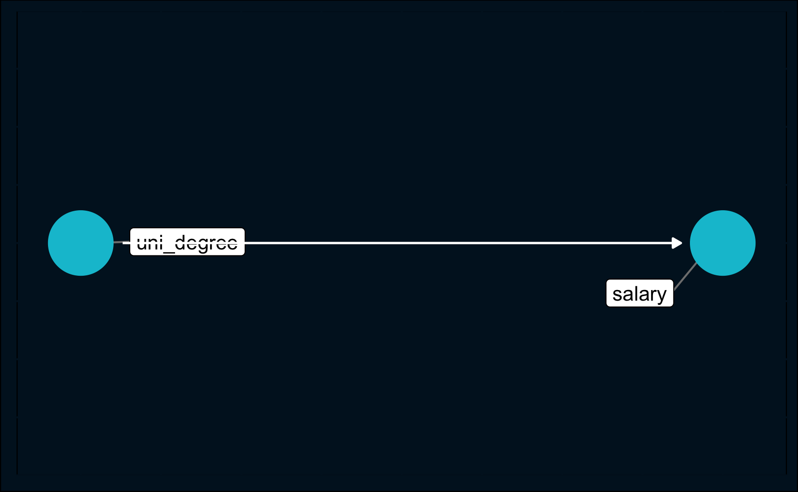
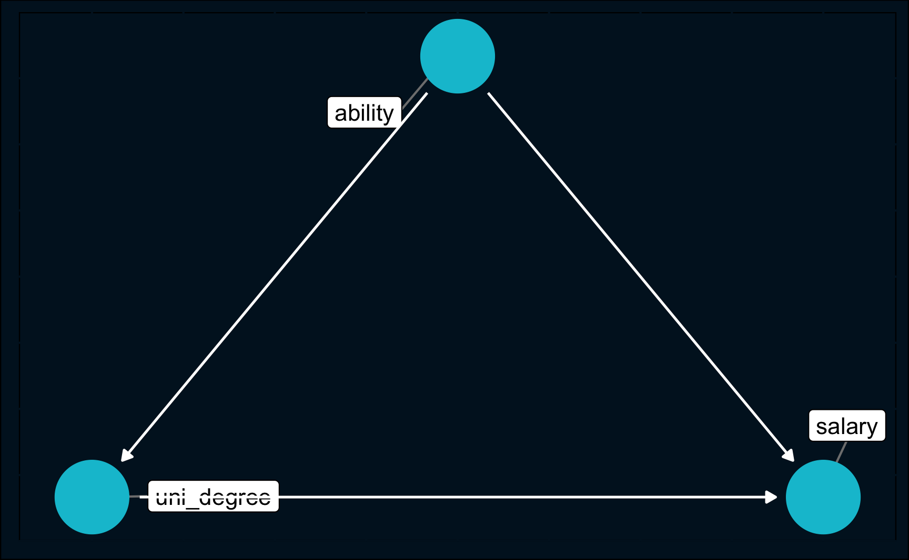
But zooming out and thinking about why a university degree is correlated with higher salaries could lead you to the idea that both university degree and salary are influenced by individuals’ ability. People who are more capable tend to go to university and will be more successful in their later career regardless of the university degree.
It is very likely that the truth is that both ability and university degree are factors for future salary, but just to get your assumptions clear and guide you in your research strategy, DAGs are of a great benefit.
Notation
Let’s have a look at a generic DAG to dive into the notation.
First of all, a DAG presents a chain of causal effects captured by nodes and arrows. Nodes depict random variables, such as the treatment variable, control variables and the outcome variable and arrows represent the flow of a causal effect between two variables.
In a directed acyclic graph, causal relationships run in one direction and they run forward in time. The direction is represented by an arrow: there is a an effect of \(Z\) on \(X\) and \(Y\) and there is an effect of \(X\) on \(Y\).
Also, directed acylic graphs are only useful in scenarios where the flow of causation runs in one direction. Graphs do no involve things as reverse causality or simultaneity. (Then, you could help yourself using time indices for the variables, but in general DAGs are used only for acyclic models.)
Nodes are ancestors or parents of another node when there is an arrow directing from the parent node to the child node: \(Z\) is the parent node of its child node \(X\) and so on. Instead of child node, you can also use the term descendant.
Three Types of Association
Most of the time, DAGs are more complex than the example above. Even in that example, there are many more variables that could be included, like social environment, gender etc. But although in practice DAGs are more complex, they can be disassembled in building blocks that are easier to analyze.
Effectively, there are only three different types of association we need to focus on:
Chain: \(X \rightarrow Z \rightarrow Y\)
Confounder: \(X \leftarrow Z \rightarrow Y\)
Collider: \(X \rightarrow Z \leftarrow Y\)
Knowing their characteristics and idiosyncrasies allows us to identify valid strategies to estimate causal effects. Then, you know which variables you have to include in your analysis and which ones you have to leave out. Because in case you include or exclude the wrong variables, you will end up with a biased results and you are not able to interpret your estimate causally.
It is important to understand (conditional) (in-)dependencies between \(X\), \(Y\) and \(Z\) with particular focus on conditional independence. What it exactly is, how it is defined, we will explain now going through the types of association mentioned above.
Chain
One element is a chain of random variables where the causal effect flows in one direction.
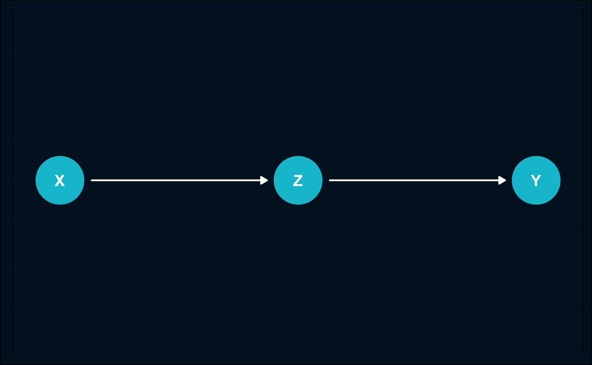
An example of such a causal mechanism (page 37, Pearl) could be the effect of work hours on training and training on race time. In the DAG, the variables would be:
\(X\): work hours
\(Z\): training
\(Y\): race time
This mechanism is also sometimes called mediation, because \(Z\) mediates the effect of \(X\) on \(Y\).
In terms of dependencies,
\(X\) and \(Z\): dependent, as indicated by the arrow.
\(Z\) and \(Y\): dependent, as indicated by the arrow.
\(X\) and \(Y\): dependent, as indicated by the arrow (going through \(Z\)).
\(X\) and \(Y\) conditional on \(Z\): independent, because when we condition on the training amount, that means we hold training amount fixed at a particular level, then there is no effect from work hours to race time as there is no direct effect, but only an effect through the amount of training. In other words, for individuals that differ in the hours they work but still have the same amount of training, there is no association between working hours and race time.
Rule: Two variables, \(X\) and \(Y\), are conditionally independent given \(Z\), if there is only one unidirectional path between \(X\) and \(Y\) and \(Z\) is any set of variables that intercepts that path.
Fork
Another mechanism is the fork, also called common cause.
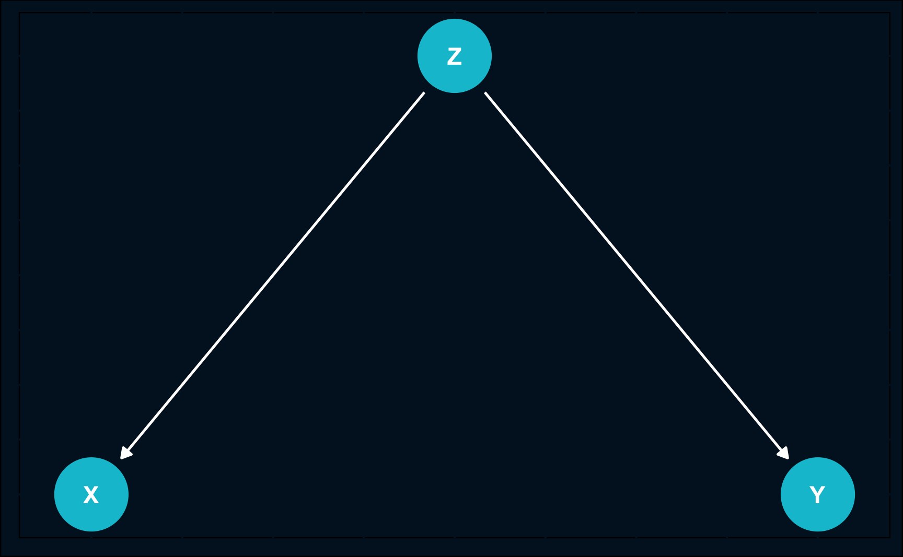
The reason it is called common cause is that, as depicted above, both \(X\) and \(Y\) are caused by \(Z\).
To illustrate it, consider the following scenario: \(Z\) represents the temperature in a particular town and \(X\) and \(Y\) represent ice cream sales and number of crimes in that same town, respectively.
Then, you could hypothesize that with increasing temperature people start to eat and buy more ice cream and also more crimes will happen as more people are outside which presents a greater opportunity for crime. Therefore ice cream sales and number of crimes tend to behave similarly in terms of direction and magnitude, they correlate.
However, there is no reason to assume there is a causal relationship between ice cream sales and the number of crimes.
Again, let’s check in term of dependencies:
\(Z\) and \(X\): dependent, as indicated by arrow.
\(Z\) and \(Y\): dependent, as indicated by arrow.
\(X\) and \(Y\): dependent, as both are influenced by \(Z\). \(X\) and \(Y\) change both with variation in \(Z\).
\(X\) and \(Y\) conditional on \(Z\): independent, as for a fixed level of temperature, there is no association anymore.
Rule: If variable \(Z\) is a common cause of variables \(X\) and \(Y\), and there is only one path between \(X\) and \(Y\), then \(X\) and \(Y\)are independent conditional on X.
Collision
The last mechanism is the collision, which is also called common effect.
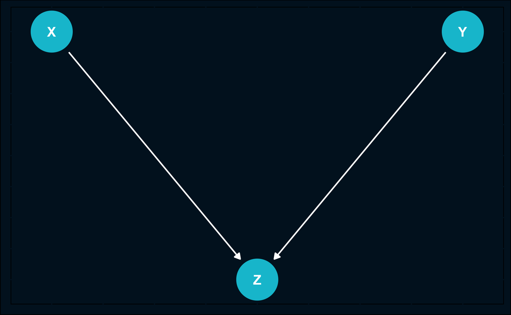
It is the reflection of the fork and both \(X\) and \(Y\) have a common effect on the collision node \(Z\).
This time, as we are already used to it, we will start to list the dependencies and then use an example for illustration:
\(X\) and \(Z\): dependent, as indicated by arrow.
\(Y\) and \(Z\): dependent, as indicated by arrow.
\(X\) and \(Y\): independent, there is no path between \(X\) and \(Y\).
\(X\) and \(Y\) conditional on \(Z\): dependent.
A popular way to illustrate the common effect, especially the last dependency, is to take an example that is related to Berkson’s paradox.
For example, imagine the variables to be:
\(X\): attractiveness
\(Y\): talent
\(Z\): celebrity
First of all, in the general population, there is no correlation between attractiveness and talent (3rd dependency). Second, being either attractive or having a talent will help you to become a celebrity (1st and 2nd dependency).
But what about the last dependency? Why are attractiveness and talent suddenly correlated when conditioned on e.g. being a celebrity? That is because when you know someone is a celebrity and has no talent, the likelihood that he/she is attractive increases because otherwise he/she would likely not be a celebrity. Vice versa, if you know someone is a celebrity and is not attractive, he/she is probably talented in some form.
Rule: If a variable \(Z\) is the collision node between two variables \(X\) and \(Y\), and there is only one path between \(X\) and \(Y\), then \(X\) and \(Y\) are unconditionally independent but are dependent conditional on \(Z\) (and any descendants of \(Z\)).
Causal Identification
You might wonder why we put such an emphasis on the dependencies in the previous sections. In fact, to isolate causal effects it is crucial to know how to interpret DAGs based on the dependence structure. Understanding what paths between what variables can bias effects is maybe the most important concept of causal inference.
Again, to understand the theory we will rely on simple examples and you will see a lot of similarities to the section above.
Confounding
A very common problem when trying to prove causal effects is confounding.
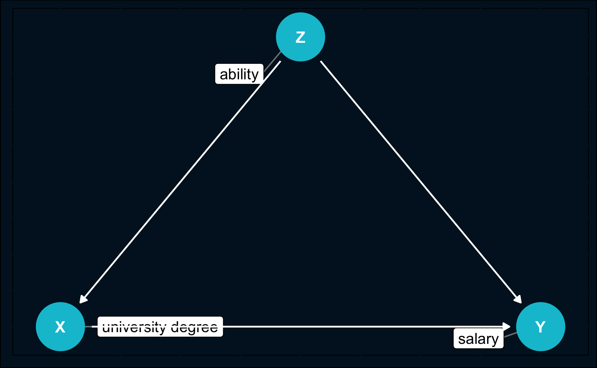
It is the same DAG as in the introduction. So just recall and imagine \(X\) was university degree, \(Y\) future salary and \(Z\) ability.
There are two paths from \(X\) to \(Y\):
direct path \(X \rightarrow Y\)
backdoor path \(X \leftarrow Z \rightarrow Y\)
First of all, it is important to clarify what effect we are actually interested in and that is the direct causal effect of university degree on future salary, \(X\) on \(Y\).
The indirect effect is not causal but is only spurious correlation induced by \(Z\) which we are generally not interested in. It is called backdoor path.
So how do we proceed to extract that effect? We need to somehow remove the association between \(X\) and \(Y\) that is only due to variation in \(Z\). And from the previous section we know how to do that. \(X\) and \(Y\) need to be independent conditional on \(Z\) and block the path from \(X\) to \(Y\) over \(Z\).
But what does blocking the path mean? It means that we have to condition on \(Z\), to keep it at a fixed level. Then, the variations in \(X\) that cause \(Y\) to vary are not due to \(Z\) because it does not vary at all and cannot have an impact on either \(X\) or \(Y\). Doing that we closed the backdoor and are able to retrieve the causal effect.
Not blocking the path would falsify our results and is what is called the omitted variable bias. That is why \(Z\) is called confounder, because it confounds the ability to measure the causal effect.
However, the main problem is that in many cases you might not be able to block the path for two different reasons:
You are aware of the confounder, but you did not collect data for it
You are not aware of the confounder (and probably did not collect data for it)
This stresses the importance of theoretical knowledge about the phenomenon you are researching. Without it, it is very unlikely that you can prove truly causal effects. The risk of not paying attention to confounders gets clear when we look at graphs visualizing an example of Simpson’s paradox: accounting for a third variable reverses the sign of correlation.
We can illustrate it with an imaginary example. Let’s assume you want to measure how a specific characteristic affects salary. So you start to collect data about both variables, throw them into a regression and your result tells you that there is a positive correlation. But what happens if you take the education level into account? You can see how the lines show a positive correlation on the left and a negative correlation on the right. When you include a third variable, the relationship reverses.
It is neither wrong or right to always include or exclude variables, but it depends on the application and question you want to answer. This is why causal reasoning is so important.
Code
# Simpson's paradox ----
n <- 1e+03
education <- rbinom(n, 2, 0.5)
character <- rnorm(n) + education
salary <- education * 2 + rnorm(n) - character * 0.3
salary <- sample(10000:11000,1) + scales::rescale(salary, to = c(0, 100000))
character <- scales::rescale(character, to = c(0, 7))
education <- factor(education, labels = c("Low", "Medium", "High"))
df <- tibble(
salary,
character,
education
)
# Not conditioning on education
simps_not_cond <- ggplot(df, aes(x = character, y = salary)) +
geom_point(alpha = .8) +
stat_smooth(method = "lm", se = F)
# Conditioning on education
simps_cond <- ggplot(df, aes(x = character, y = salary, color = education)) +
geom_point(alpha = .8) +
stat_smooth(method = "lm", se = F) +
theme(legend.position = "right")
# Plot both plots
simps_not_cond
simps_cond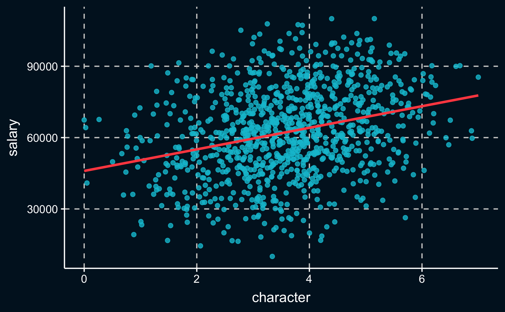
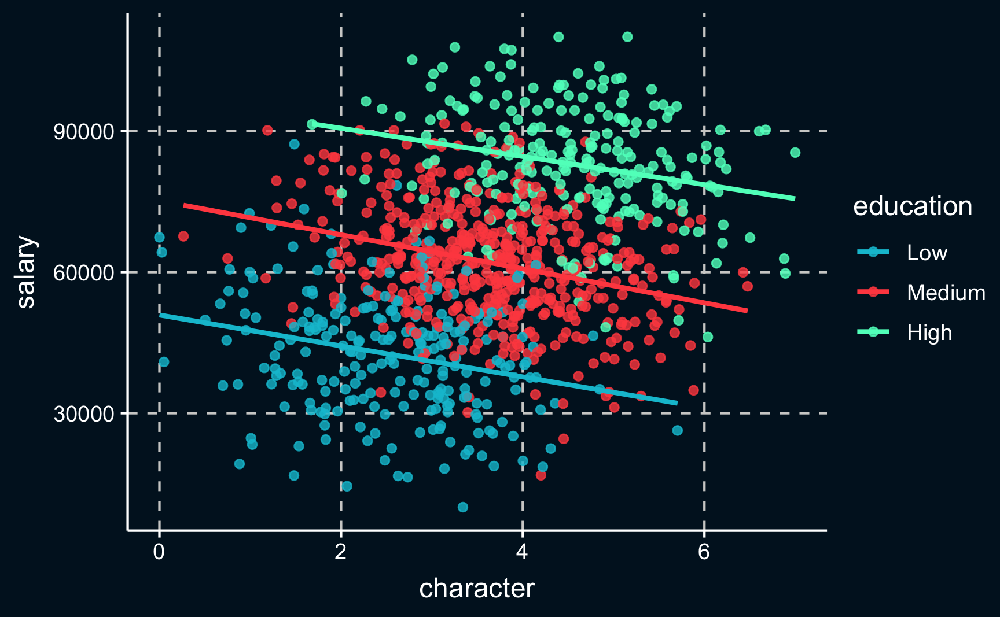
Collider
You probably noticed that the confounding example was related to the common cause in the previous section. The next example is related to the common effect mechanism.
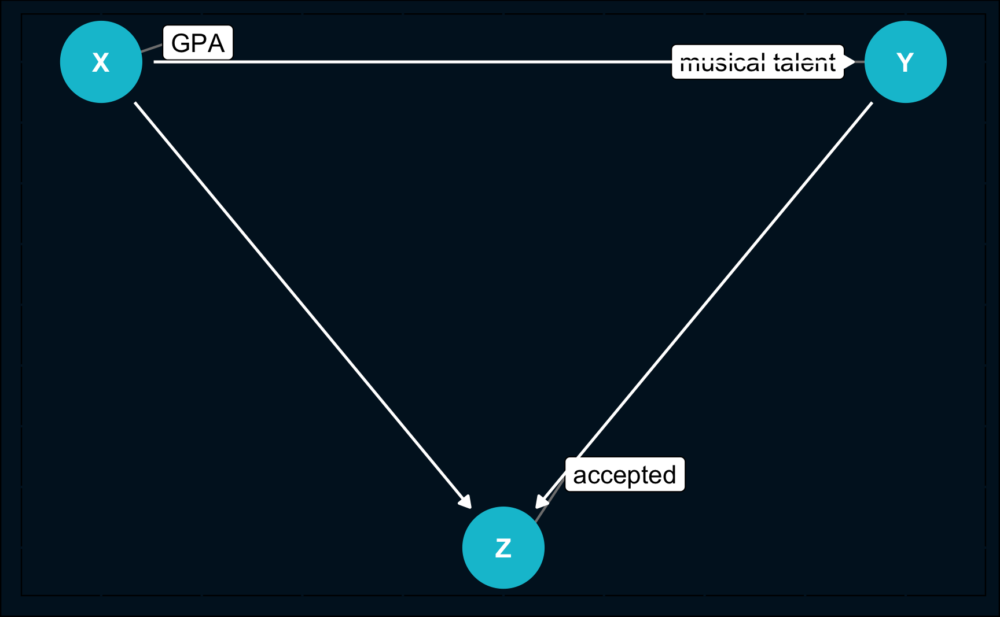
Now consider the following example: a research group wants to examine if there is a causal relationship between grade point averages (\(X\)) and musical talent (\(Y\)). They can use data from their own university where both is measured for every student as scoring high in one of these characteristics substantially increases your chance of being accepted.
Now the researchers, who hypothesized a positive or no correlation between \(X\) and \(Y\), perform a simple analysis and, to their surprise, find out that there is a strong negative correlation. This strange result can be explained by collider bias. Implicitly, as they only used data from their own university students, they also conditioned on a collider \(Z\), which is “accepted to university” and is fixed on a constant level of actually being accepted to the university.
Again, we have two paths from \(X\) to \(Y\), but one thing is different: the backdoor path is already closed because \(Z\) is a collider, both arrows point toward it.
To correct their results they would need to have data from the whole population and not only students from a university that puts focus on either grade point averages or musical talent. Having a full population as a sample would probably lead to the result that there is no correlation between \(X\) and \(Y\).
This case (collider) is different to the case before (confounding), where conditioning was the correct solution. But if you have a collider in you DAG, make sure not to condition on it as it creates a dependence between \(X\) and \(Y\). You “open” a backdoor path that was closed before, just due to the presence of the collider.
Collider bias often arises when your sample is not very representative of the population you are making claims about. How that could change your result can be seen in an example Berkson’s paradox. While there is no correlation for the whole population, for smaller subgroups there are. And therefore, it is crucial that you clearly state what effect you are interested in.
# Berkson's paradox ----
n <- 1e+03
ability <- rnorm(n)
motivation <- rnorm(n)
aptitude <- 1/2 * ability + 1/2 * motivation + rnorm(n, 0, .1)
df <- tibble(
ability = ability,
motivation = motivation,
aptitude = aptitude,
student = ifelse(aptitude > 0, "student", "no_student")
)
# Not conditioning on student
berk_not_cond <- ggplot(df, aes(x = motivation, y = ability)) +
geom_point() +
stat_smooth(method = "lm", se = F)
# Conditioning on student
berk_cond <- ggplot(df, aes(x = motivation, y = ability,
color = student,
alpha = student)) +
geom_point() +
stat_smooth(method = "lm", se = F) +
scale_color_manual(values = c("student" = ggthemr::swatch()[4],
"no_student" = ggthemr::swatch()[5])) +
scale_alpha_manual(values = c("student" = 1, "no_student" = 0.2)) +
theme(legend.position = "right")
# Plot both
berk_not_cond
berk_cond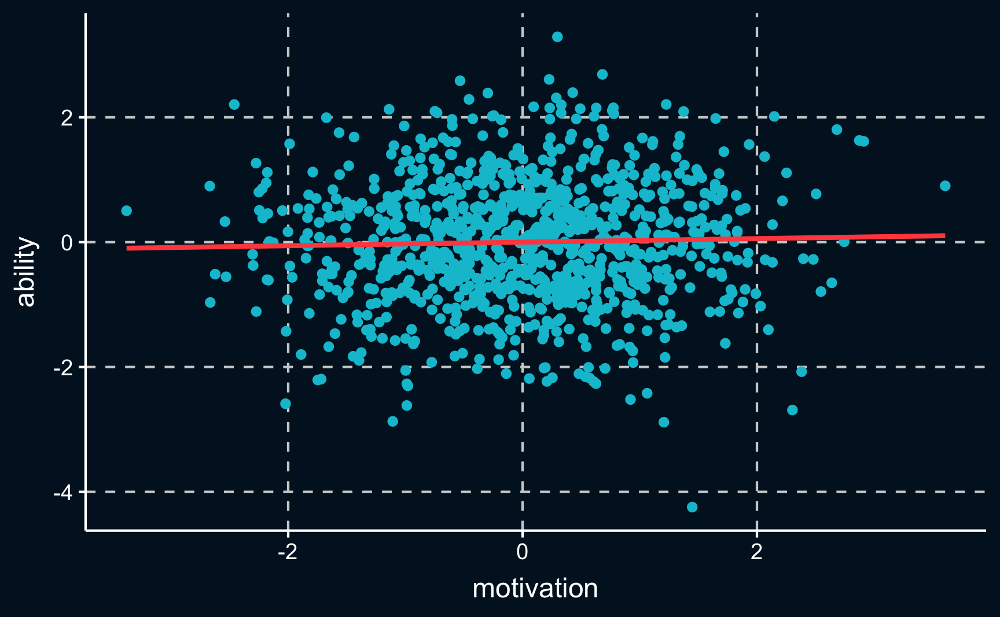
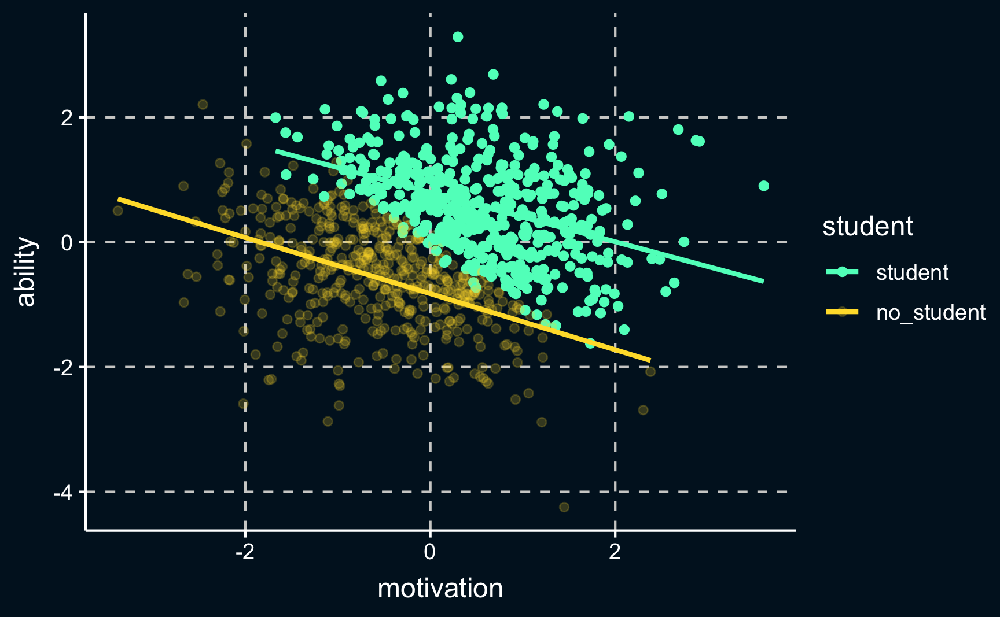
Simulating interventions
As you could see in the previous sections, DAGs help us to find out, in a non-technical but graphical way, how we are able to isolate the causal estimate we are interested in. And not explicitly stating our understanding of the data-generating process can easily lead us to wrong conclusions.
d-separation
One concept, that we have not named yet but implicitly used, is d-separation. If an effect of \(X\) on \(Y\) is d-separated, there is no statistical association that can flow between \(X\) and \(Y\) except for the direct effect. In fact, d-separation determines conditional independence.
D-separation formalizes what we have already learned when going through the tree types of association.
Practically (http://bayes.cs.ucla.edu/BOOK-2K/d-sep.html) , it is easier to define the opposite, d-connection:
Rule 1: unconditional separation: \(X\) and \(Y\) are d-connected if there is an unblocked path between them. (As an example, imagine a confounder, that is not conditioned on.)
Rule 2: blocking by conditioning: \(X\) and \(Y\) are d-connected, conditioned on a set of \(Z\) nodes, if there is a collider-free path between \(X\) and \(Y\) that traverses no member. (Think of a mediated effect that takes away parts from the direct effect.)
Rule 3: conditioning on colliders: If a collider is a member of conditioning set \(Z\), or has a descendant in \(Z\), then it no longer blocks any path that traces this collider. (Image the collider example in the previous section.)
!!! MAYBE CHANGE TO https://de.wikipedia.org/wiki/D-Separation
Knowing these rules and having mapped our assumptions into the DAG allows us to treat observational data like experimental data and simulate interventions as we would have conducted an experiment. However, it is not a silver bullet as in many cases data availability will stop you from isolating the causal effect. For example, if you do not observer a confounder, you cannot control for it. All empirical work requires theory and with observational data we need to be extra careful to make sure to actually extract the effects we are interested in.
Backdoor/Frontdoor Criterion
Special cases that are derived from d-separation rules are the backdoor and frontdoor criterion/adjustment.
To satisfy the backdoor criterion, we have to make sure all backdoors are closed, which, as already mentioned, differs for confounders and colliders.
Again, we want to block all other paths between \(X\) (treatment) and \(Y\) (outcome). So depending on the structure of the DAG, the following can block a path:
a chain or a fork whose middle node is in \(Z\)
a collider that is not conditioned on, which means it is not in \(Z\)
The frontdoor criterion, which is actually a consecutive application of the backdoor criterion, is a bit more complicated and we will leave it out for now, but in a the section about instrumental variables we will deal with it extensively.
Algorithms to identify causally valid estimates
If DAGs become more complex because there are a lot of variables that are somehow related, we can make use of algorithms to check all the rules for us.
One application to help in such cases is http://dagitty.net/dags.html, where you can draw your DAG, define what is the treatment and outcome, which variables are observed and unobserved and many other things. Then it will show you what kind of adjustment is necessary to estimate the causal effect of interest.
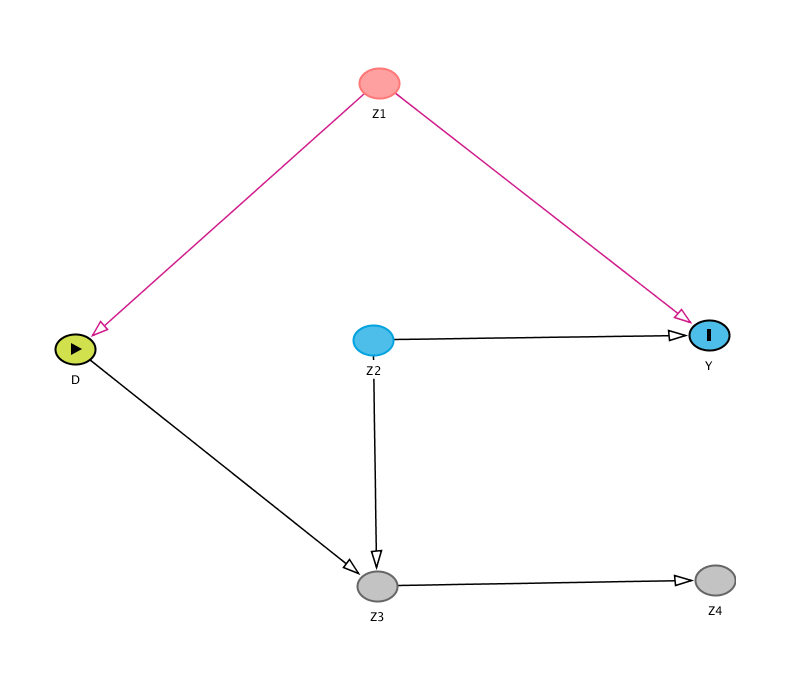
Try to build this graph on dagitty.net and look what useful information you can get from the site.
dagitty is also implemented in R and combined with ggdag you are also able to plot your DAGs in a easy manner and obtain information needed for designing your research.
First, let’s just plot the DAG. When we define exposure, which is a different term for intervention or treatment, and the outcome, they are highlighted in another color.
library(dagitty)
library(ggdag)
# create DAG from dagitty
dag_model <- 'dag {
bb="0,0,1,1"
D [exposure,pos="0.075,0.4"]
Y [outcome,pos="0.4,0.4"]
Z1 [pos="0.2,0.2"]
Z2 [pos="0.3,0.5"]
Z3 [pos="0.2,0.6"]
Z4 [pos="0.4,0.6"]
D -> Y
D -> Z3
Z1 -> D
Z1 -> Y
Z2 -> Y
Z2 -> Z3
Z3 -> Z4
}
'
# draw DAG
ggdag_status(dag_model) +
guides(fill = "none", color = "none") + # Disable the legend
theme_dag_cds() +
geom_dag_edges(edge_color = "white")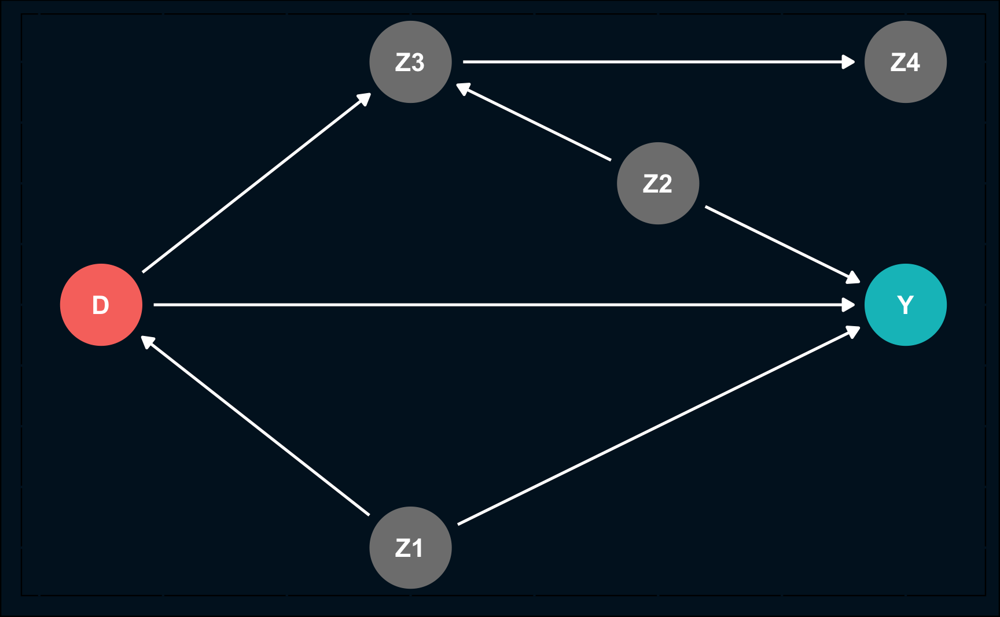
Let’s check what paths there are from treatment \(D\) to \(Y\). Of course, there is a direct path (the causal path) and there are two other paths, of which one is closed.
# find all paths
paths(dag_model)$paths
[1] "D -> Y" "D -> Z3 <- Z2 -> Y" "D <- Z1 -> Y"
$open
[1] TRUE FALSE TRUEWe can also plot the open paths. One path is already blocked by a collider (remember: we do not want to open that path).
# plot paths
ggdag_paths(dag_model) +
theme_dag_cds()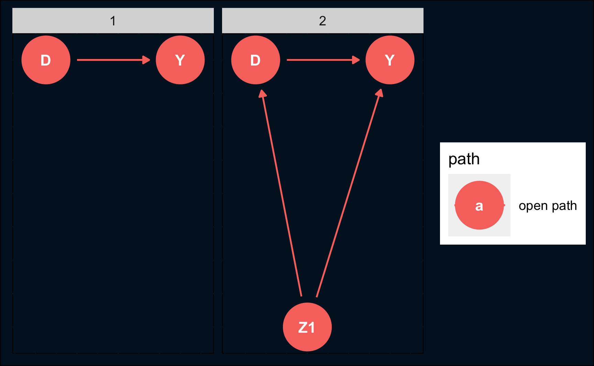
To see what we have to adjust for to isolate the causal effect, we use adjustmentsSets(). As you might have figured out already, it is \(Z1\) that needs to be conditioned on.
# find all nodes that need to be adjusted
adjustmentSets(dag_model){ Z1 }A very concise summary plot is returned by the function ggdag_adjustment_set(), which shows what needs to be adjusted, the open paths and the whole DAG.
# plot adjustment sets
ggdag_adjustment_set(dag_model, shadow = T) +
theme_dag_cds() +
geom_dag_edges(edge_color = "white")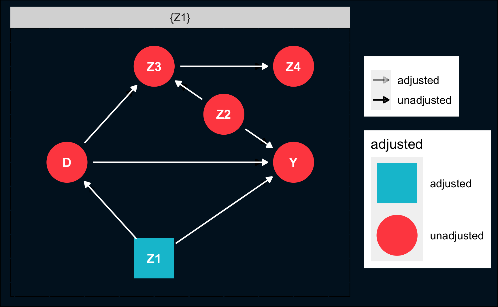
But what does it actually mean in practice? How do we block a path or condition on a variable?
If you use a linear regression, including a variable as an independent variable is the sames as conditioning on it. If you use other models, you might have to use subsets and average them or do some kind of matching where you only compare units that have the same value for the variables that has to be conditioned on.
In the following chapters, we will deal with a large variety of techniques and figure out clever ways to isolate causal effects.
Conclusion
We have learned that when we want to talk about causality, atheoretical approaches are likely to fail and assumptions have to be made and shown. DAGs are very powerful in depicting the relationships according to our theory and help to develop a valid research design.
Implicitly, DAGs always base on some form of counterfactual reasoning as we presuppose that we could change the values for the treatment variable by simulating an intervention. In that sense, DAGs give an answer to the fundamental problem of causal inference.
Assignment
Think about example from previous chapter (parking spots) and draw DAG
Load the data and compute what the click-through-rate (CTR, clicks / impressions) is for male and female. Then, compute the CTR for male and female on country level. Then, check what is surprising about the CTRs and explain how that could happen.